AI Voxel Studio - Gaussian Splatting with USD Pipeline Integration
Pipeline
AI Stylization
Transfer style from style reference to source images
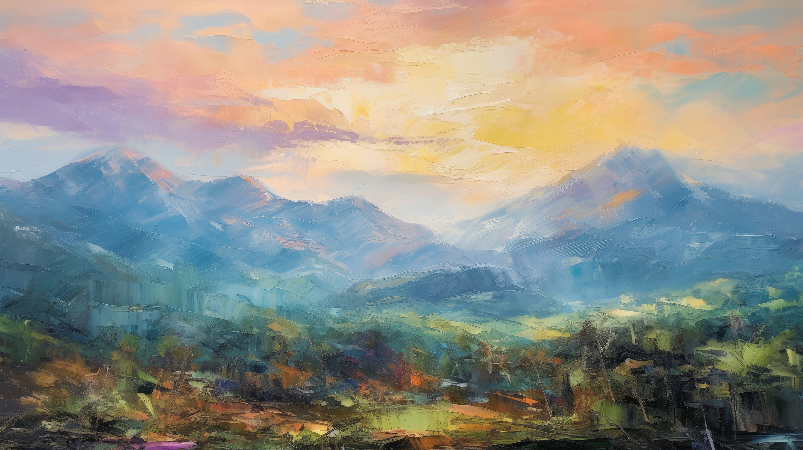
Style Reference
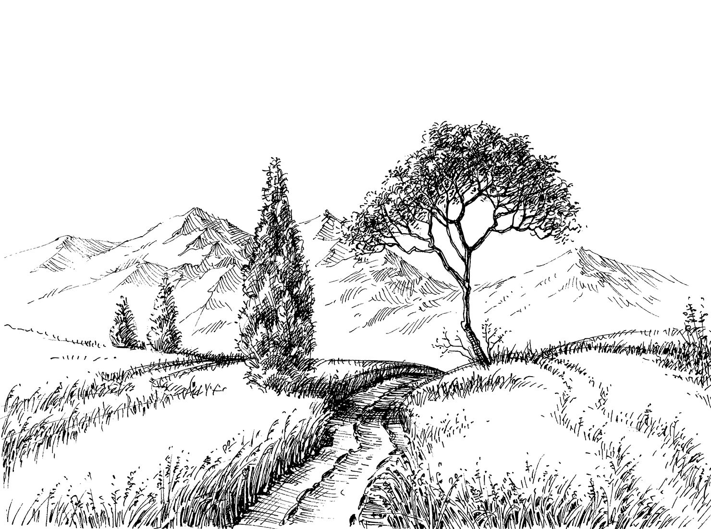
Source Image
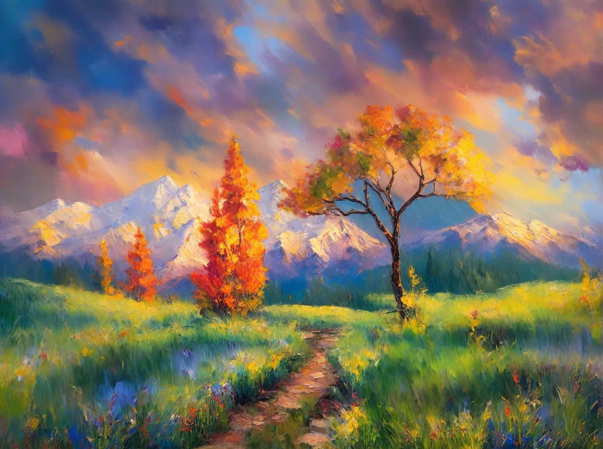
Result
3D Gaussian Splat Generation
Images are converted into Gaussian Splats in PLY format using Marble AI Lab and Apple SharpML.
The generated Gaussian Splats are then cleaned up using Super Splats and GSOPs in Houdini.
USD Conversion
Convert Gaussian Splat (.PLY) to voxel to create a Mindcraft style scene using Danci's tool
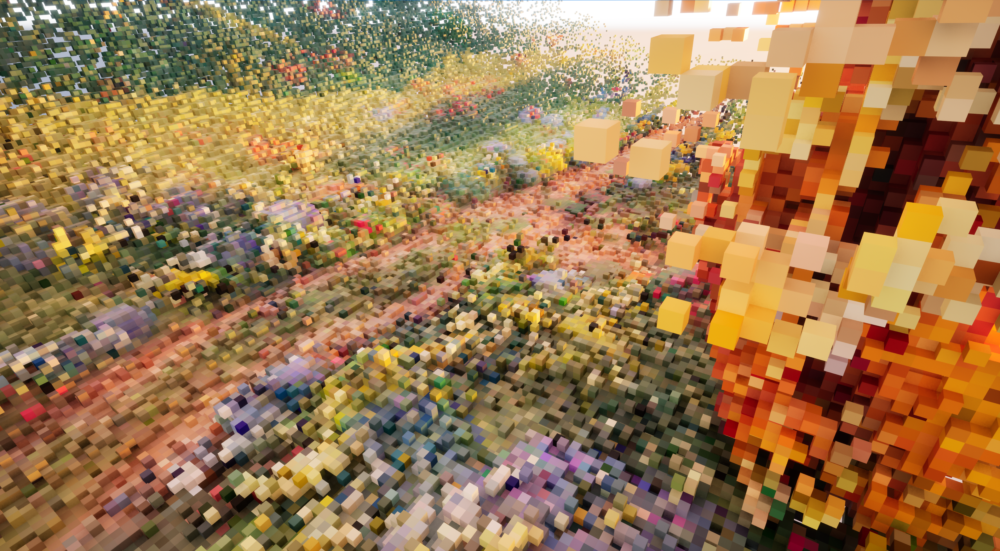
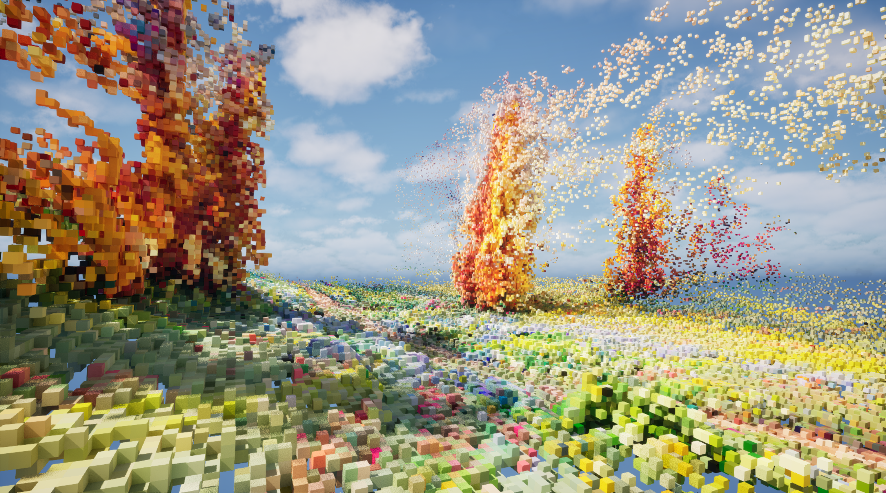
Real-time Deployment
Integration with Unreal Engine 5 for real-time experience and interaction.
Gaussian Splat Animation and Voxelization in Houdini
Animate and voxelize Gaussian splat using GSOP, point attribute and copy to point
Animation
Create Mask in Attribute Wrangle SOP with relbbox function in VEX
Final Output
Voxelization
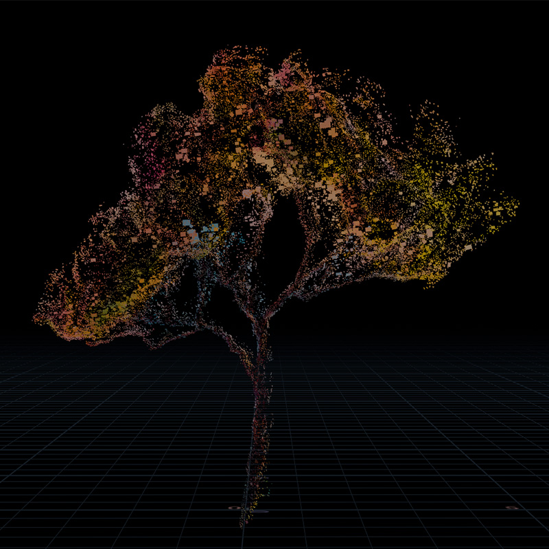
Copy boxes to points with original attribute from GSOP
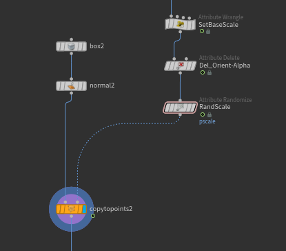
Node Setup
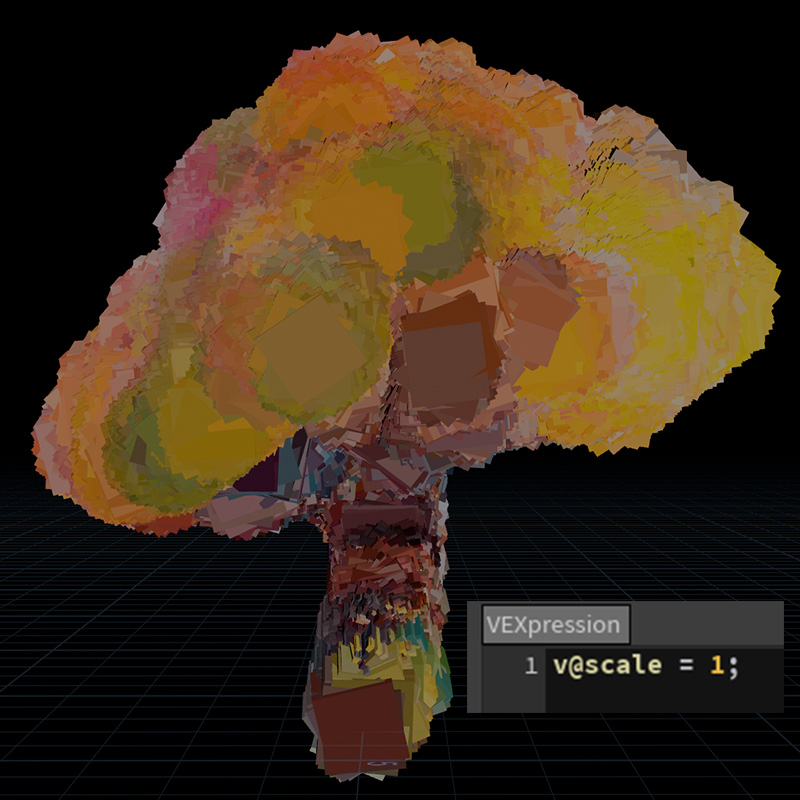
Equalize Scale - scale attribute from GSOP is vector not pscale (see in geometry spreadsheet)
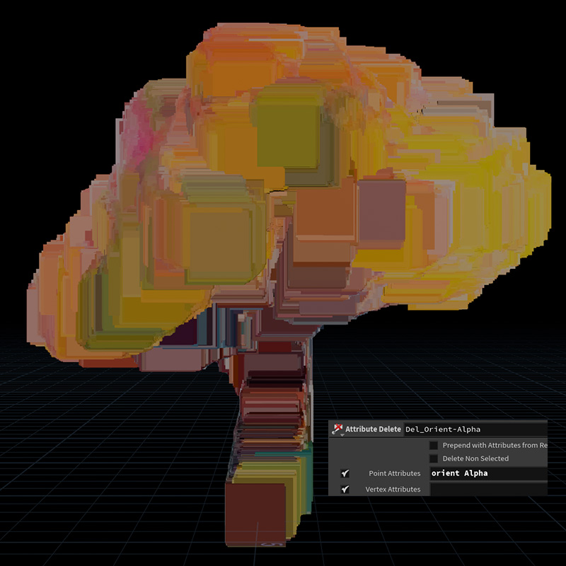
Remove Orientation and Alpha
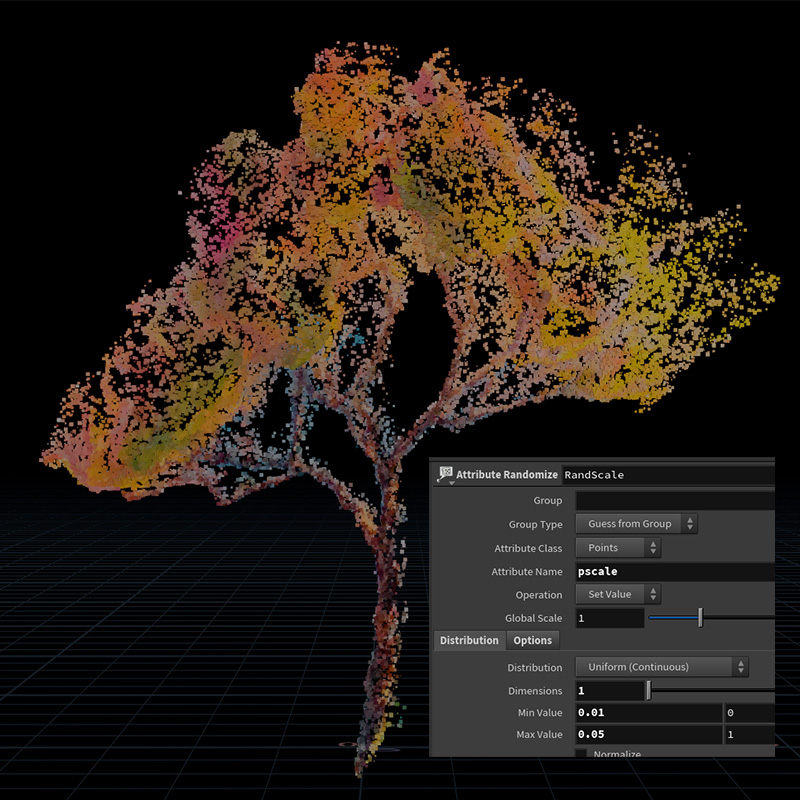
Final Output
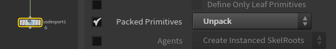
To export animation with colors, set Pack Primitives to Unpack in USD Export SOP